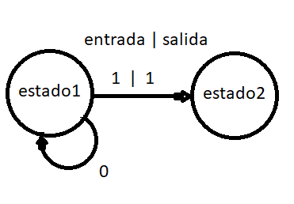
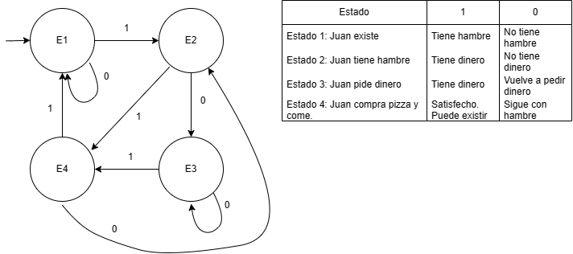
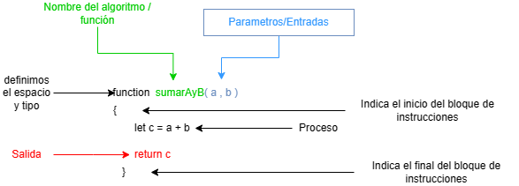

Programación
Diseñar una historia y sus variantes en un diagrama de estado
Programar en javascript
Utilizar el motor para juegos
Sabemos que para calcular un área de un triangulo la formula es (b*a) / 2, también sabemos formula o receta para conseguir hacer pan, agua + sal + harina + amasar + 180° de calor durante 40 min. Estos tipos de problemas son en una dirección pasos hacia el resultado, pero ¿Y si fuera al revés? Si nos dieran por ejemplo el pan y nuestra tarea fuera encontrar la manera de crear ese pan. Es decir, que recursos y pasos seguir para conseguir el resultado.
Un algoritmo es un conjunto detallado y lógico de pasos para alcanzar un objetivo o resolver un problema
Características
Actividad
Crea el algoritmo del cuento caperucita roja
Imaginemos que recibimos un algoritmo como una receta de cocina para hacer un rico budín. Para lograr hacer el budín necesitamos los ingredientes. Dicho esto obtenemos los 3 elementos básicos de un sistema. Entrada->Proceso->Salida
Sistemas
Las elementos de un sistema son entrada->proceso->salida
Una aplicación de los algoritmos se tiene con los autómatas.
Actividad:
Etiqueta los siguientes elementos y agrega el paso que falta
| ETIQUETAS | ELEMENTOS |
|---|---|
| . . . . . . . . . . . . . . . , Agregar calor durante 10 min | |
| arroz cocinado | |
| arroz, agua, sal, olla |
Un autómata es un modelo matemático para una máquina de estado finito. Es una máquina que, dada una entrada de símbolos, “salta” a través de una serie de estados de acuerdo a una función de transición (que puede ser expresada como una tabla).

| Estado | Entradas |
|---|---|
| Descripción del estado | valor de entrada |
Actividad

¿Como guardamos las entradas? Es decir, necesitamos un espacio. Pero, ¿Y si tenemos varios espacios como los podríamos diferenciar unos de otros? Podríamos darle un nombre. Esas son las 2 características de una variable.
En programación, una variable está formada por un espacio en el sistema de almacenamiento y un nombre simbólico que está asociado a dicho espacio.
Si una variable es un espacio ¿Que pasaría si lo que queremos guardar no entra en ese espacio o sobra? Pues de este problema es que surgen los tipos de datos y el tipado de un lenguaje.
Utilizaremos javascript, es un lenguaje de tipado débil, donde crearemos espacios para guardar información utilizando la palabra “let”, es decir variables.
Actividad
En el ejemplo veremos,
let
nombre
el dato que queremos guardar en la pc
El nombre de la variable sera mensaje
El valor será un tipo cadena de caracteres(string) se declaran entre comillas “rojo”
Crea un archivo index.html en tu pc y ábrelo con vscode
Agrega el siguiente código.
<script>
let mensaje="Hola mundo"
</script>
Haz creado tu primer documento web. Ahora puedes abrir este archivo en el navegador.
¿No se ve ningún cambio verdad? Pues ahora haremos que el valor que guardamos pueda verse. Pero ¿Donde se vería exactamente? El cuerpo(body) es donde estara lo que se vemos en pantalla, reemplaza el código anterior por este:
<body>
</body>
<script>
let mensaje="Hola mundo"
// dentro del documento [document]
// dentro de <body>
// propiedad [innerText]
document.body.innerText = mensaje
</script>
Quizás te preguntes que son los atributos o propiedades, hay estructuras de datos, es decir, formas de organizar los datos para que sea más fácil trabajar con ellos, por ejemplo, una lista o un objeto.
// asi representamos una lista
let estoEsUnaListaDeNumeros = [1,4,10,12,95]
// asi podemos representar un objeto
let estoEsUnObjeto ={nombre:"daniel",apellido:"garcia"}
¿Pero como accedemos a la información de estas estructuras? Utilizando corchetes, por ejemplo, obtener el primer elemento de la lista
<body>
</body>
<script>
let lista = [1,4,10,12,95]
document.body.innerText = lista[0]
</script>
Para acceder al nombre de persona tambien lo haremos con corchetes o un punto
<body>
</body>
<script>
let persona={nombre:"dani",apellido:"gar"}
document.body.innerText = persona["nombre"]
// alternativa
// document.body.innerText = persona.nombre
</script>
¿Podemos tener otros elementos aparte del body? Para organizar la información existen otras etiquetas(< tag >), si te interesa saber más del lenguaje html y todas sus etiquetas puedes investigar, nosotros solo abarcaremos javascript.
Organizaremos los pequeños algoritmos que tengamos dentro de bloques de código, utilizando la palabra function indicamos que tipo de espacio necesitamos y al igual que las funciones le asignaremos un nombre acompañado de paréntesis(). El bloque de la función se limitara con llaves {}. Tomaremos el ejemplo anterior para crear la función escribir nombre, y luego la invocaremos utilizando el nombre y paréntesis.

<body>
</body>
<script>
function miPrimerFuncion(){
let persona={nombre:"dani",apellido:"gar"}
document.body.innerText = persona["nombre"]
// alternativa
// document.body.innerText = persona.nombre
}
miPrimerFuncion()
</script>
Como vemos obtenemos la misma salida que antes. Nosotros utilizaremos bloques de código que ya están listos para avanzar mas rápido.
Pero si tuviéramos la función suma, y nos interesa obtener el resultado del procedimiento en lugar de imprimirlo ¿Como lo haríamos? Para ello existe la palabra reservada para la sintaxis, “return”. En el ejemplo guardaremos el resultado de la función suma en una variable para utilizarlo mas adelante.
function suma(a , b){
return a + b
}
let resultadoDeSumar = suma( 12 , 5 )
console.log(resultadoDeSumar)
Educación imaginativa: Herramientas cognitivas para el aula
Microsoft Word - Doc.1 - Introd. a los organizadores gráficos.doc (infd.edu.ar)